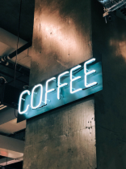
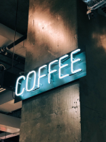

Rösterei & Café
Kaffee aus Kiel. Direkt gehandelt und geröstet in der eigenen
Rösterei, serviert im gemütlichen Café in der Innenstadt.
Kommt uns besuchen!
Frauenhoferstr. 13, Kiel
Frauenhoferstr. 13, Kiel
Mo - Fr 8.00 - 18.00 Uhr
Sa 11.00 - 18.00 Uhr
Sa 11.00 - 18.00 Uhr

Frisches Gebäck von nebenan
Als es die ersten Hügel des Kursivgebirges erklommen hatte, warf es
einen letzten Blick zurück auf die Skyline seiner Heimatstadt
Buchstabhausen, die Headline von Alphabetdorf. Wehmütig lief ihm eine
rhetorische Frage über die Wange, dann setzte es seinen Weg fort.
Unterwegs traf es eine Copy. Die Copy warnte das Blindtextchen, da, wo
sie herkäme wäre sie zigmal umgeschrieben worden und alles, was von
ihrem Ursprung noch übrig wäre, sei das Wort "und" und das Blindtextchen
solle umkehren und wieder in sein eigenes, sicheres Land zurückkehren.
 
